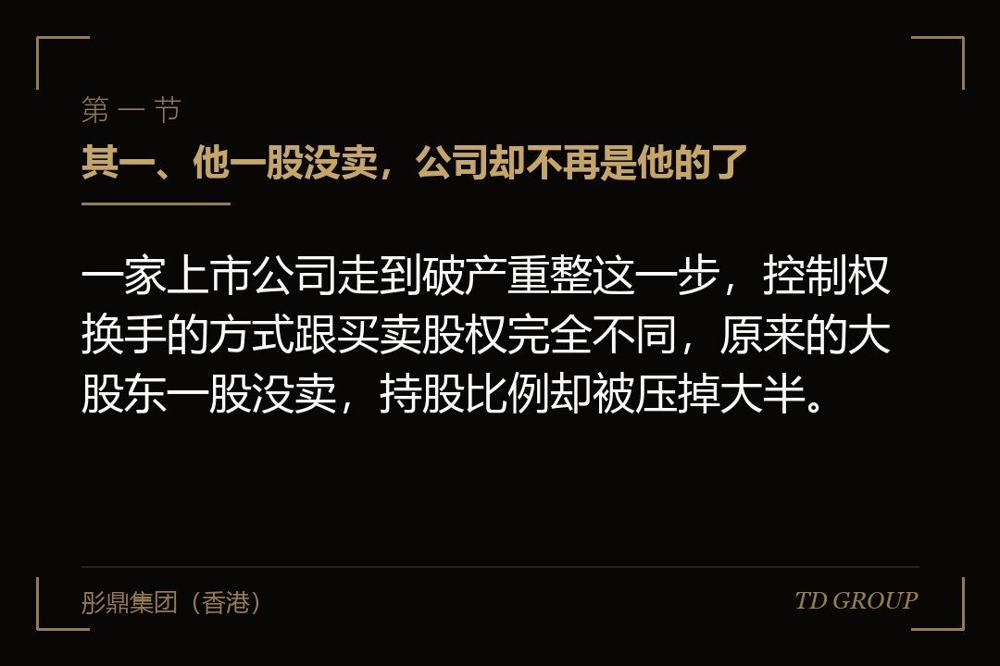
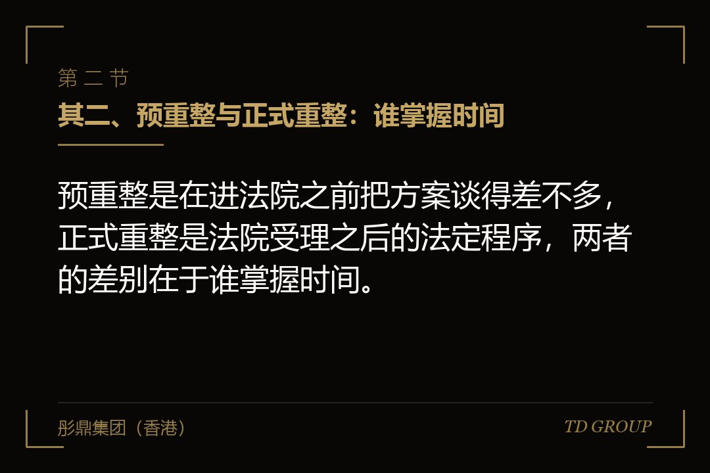
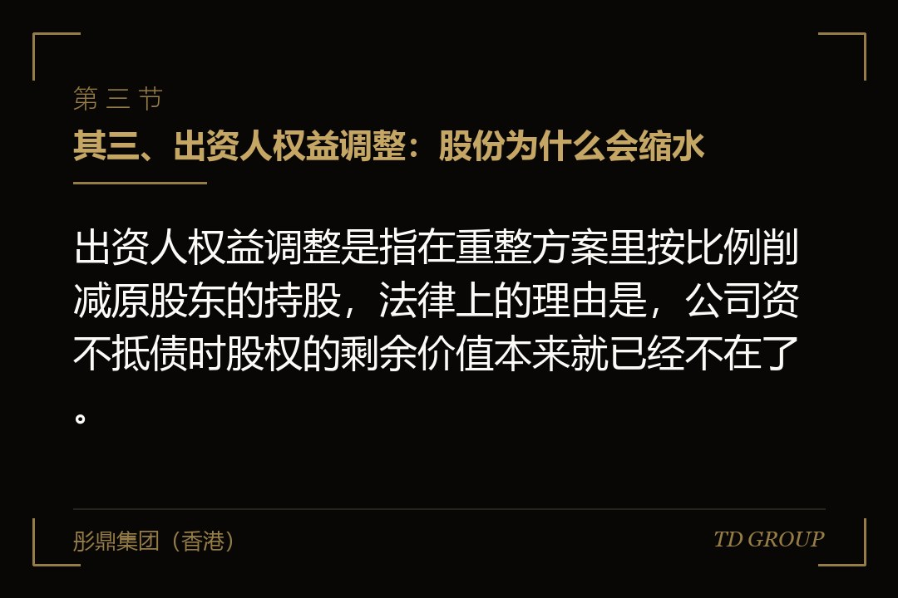

其一、他一股没卖，公司却不再是他的了

结论先行：一家上市公司走到破产重整这一步，控制权换手的方式跟买卖股权完全不同，原来的大股东一股没卖，持股比例却被压掉大半。
假设有家做建材的上市公司，主业连亏三年，为了保住工程订单又接连给几家经销商做了担保。银行的钱到期续不上，供应商拿着判决书上门，账上现金撑不过下个月的工资。
债权人向法院递了申请，法院裁定受理重整。一年之后方案通过并执行，创始人还是那些股票的名义持有人，但持股比例从三成八降到不足一成，公司的实际控制人换成了一家掏钱进来的产业集团。
他没有跟任何人签过股份转让协议，也没有收到过一分钱转让款。这跟正常状态下把控制权协议转让给买方，是两条完全不同的路：那条路上钱从买方流向卖方，卖方拿钱走人；这条路上钱从买方流向债权人，卖方交出去的是持股比例本身，一分钱拿不到。
很多老板到最后一刻还想不通的地方就在这里。他们把重整理解成一次找人接盘的融资，实际上它是一次由法院主持的、把公司所有权重新分配给债权人和新出资人的程序。
本文站在三种人的角度写：债务已经紧张还在硬撑的公司老板与大股东、想通过这条路拿到一家上市公司控制权的产业买方，以及债权人里那些手上有筹码的产业方。
其二、预重整与正式重整：谁掌握时间

结论先行：预重整是在进法院之前把方案谈得差不多，正式重整是法院受理之后的法定程序，两者的差别在于谁掌握时间。
正式重整的启动方式有几种：债务人自己申请，债权人申请，在债务人已经进入破产清算程序等特定情形下，符合条件的出资人也可以提出。法院裁定受理那一刻，程序才算真正开始。
受理之后有几件事同时发生：针对债务人的个别清偿和强制执行程序停下来，债权人要在公告的期限内申报债权，管理人接管或者监督公司的经营。
这段时间公司通常还在经营。重整跟清算的分野就在这里——清算是把东西卖了分钱，公司没了；重整是让这家公司继续开门，靠未来的经营和新进来的资金还债。
但法院受理之后有法定期限压着，方案要在期限内提交、表决、报批。而重整方案要谈的对手方是几十家甚至上千家债权人加上原股东，留给谈判的时间并不宽裕。
预重整就是为了这件事出现的。它发生在法院正式受理之前：公司、主要债权人、意向投资人先在庭外把大方向谈出来——引进谁、掏多少钱、债权怎么清偿、原股东让渡多少，谈到八九不离十，再进法院走正式程序。
好处是把最耗时间的那一段挪到了受理之前，进法院之后节奏快得多。代价是庭外谈的东西没有强制力，任何一家债权人都可以在正式程序里推翻自己此前的口头同意。
所以预重整不是重整的简化版，是它的准备期。各地法院对预重整的做法、期限和衔接规则并不统一，具体以受理法院的规定和裁定文书为准。
其三、出资人权益调整：股份为什么会缩水

结论先行：出资人权益调整是指在重整方案里按比例削减原股东的持股，法律上的理由是，公司资不抵债时股权的剩余价值本来就已经不在了。
这是老板最想不通的一步。他会说：公司欠的债我认，可股份是我一笔一笔出钱办公司拿到的，凭什么削我的。这句话在债权人会议前后的座谈上几乎每次都会被问一遍。
答案在清偿顺序里。公司的资产先还担保债权、职工债权、税款、普通债权，全部还完之后剩下的才轮到股东。一家资不抵债的公司按这个顺序算下去，轮到股东那一层时已经没有东西可分，账面上的股权在清算口径下的剩余价值是零甚至负数。
所以重整方案削减原股东的持股，逻辑上不是拿走了他的财产，而是确认了一件已经发生的事：在债权人没有被足额清偿之前，股东这一层的权益本来就不成立。
操作上有两条常见路径。一条是原股东按一定比例无偿让渡自己持有的股份，让出来的这部分交由管理人分配，一部分给重整投资人抵作出资，一部分直接分给债权人抵偿债务。
另一条是资本公积转增股本。公司用资本公积转出一批新股，但这批新股不按持股比例分给全体股东——转增出来的股份直接由投资人出资受让，或者用来抵债。原股东手里的股票数量一股没少，占全部股本的比例却被摊薄了一大截。
后一条路现在更常见，因为它不需要每位股东逐个签字同意，只要方案经出资人组表决并获法院批准即可执行。控股股东与其关联方的让渡比例通常明显高于其他股东，多数方案在这一点上是分档设计的。
其四、重整投资人凭什么拿到控制权
结论先行：重整投资人不是从老股东手里买股份，而是掏钱受让资本公积转增出来的那批新股，这笔钱不流向老股东，直接进入清偿债务的池子。
所以这条路的形状跟买控制权很不一样。协议转让里，买方付的钱是老股东的退出款；重整里，买方付的钱是拿去还债的，老股东一分钱拿不到，还要让出比例。
投资人怎么选出来，一般由管理人在法院监督下公开遴选。报名的通常分两类：产业投资人，看中的是资质、产能、渠道或者客户关系，进来之后要接着经营；财务投资人，看中的是资产处置的空间和退出安排。也常见两类组成联合体，一家管经营，一家出钱。
遴选看的不只是出价高低。管理人和债权人委员会还会看这笔钱的来源实不实、复产方案有没有内容、承诺的整改能不能落地。出价高但资金来源说不清的，在这类程序里过不了。
接着前面那家建材公司说。假设最后进来的是一家做基建材料的产业集团，它要的是那两条还能开工的生产线和当地的施工资质。这次要引进的资金，一部分用于现金清偿小额债权和职工债权，一部分留作复产的流动资金，集团拿到的是转增出来的大部分新股，直接成为控股股东。
拿到控制权之后还有一段路要走。复产方案要执行，法院裁定的重整计划要在监督期内履行完毕，履行不了可能被裁定终止执行并宣告破产。所以这不是签完字就结束的交易。
其五、债权怎么分组，谁排在前面
结论先行：债权在重整里要先分组再谈清偿，担保债权就担保物优先受偿，职工债权和税款债权排在普通债权前面，小额债权常被单列一组。
担保债权排在最前面，它就担保物的变现所得优先受偿。这一组通常谈起来最省事，也不容易被削——担保物值多少，这一组基本上能拿到多少，超出担保物价值的那部分才落回普通债权里。
接下来是职工债权：欠发的工资、经济补偿金、应缴未缴的社会保险。这一组在多数方案里全额清偿，很少打折，原因既有法律上的排序，也有现实上的稳定考虑。
再往后是税款债权。税务机关作为债权人参加程序，受偿顺序排在普通债权之前。这一组的金额常常到申报阶段才浮出水面：历史上的处理方式一旦被重新核定，本金、滞纳金和罚款会一起进来，而这三笔加起来往往比公司自己心里那个数大不少。
最后是普通债权，人数最多、金额最大、被削得最狠的一组。银行的信用贷款、供应商的货款、判决确定但没有担保的赔偿，都在这一组里。它的清偿比例各案差别很大，方向上通常明显低于债权面值。
普通债权组里还常常再切出一个小额债权组：把某个金额以下的债权单列出来，全额现金清偿。这不是照顾，是算账——这类债权人数量多、单笔金额小，全额付掉的总成本有限，却能换来一大批赞成票。
金额大的那一批则常被安排以股抵债：不给现金，给转增出来的股份，按方案约定的一个价格折算成对应的债权金额。一股抵多少债，是方案里争得最凶的一个数，它直接决定这一组实际拿回多少。具体怎么确定，以法院裁定的重整计划文本为准。
其六、分组表决与强制批准
结论先行：重整方案要按组表决，每一组都要同时满足人数和债权金额两个维度的多数，有组不同意时法院在特定条件下可以强制批准。
表决按组进行。担保债权组、职工债权组、税款债权组、普通债权组各自开会；出资人权益被调整的，还要另设出资人组表决。
一组内部要通过，通常要同时满足两个维度：同意的债权人在人数上占多数，他们所代表的债权金额也要达到一个较高的比例。具体门槛以正式规则文本和受理法院的通知为准。
这个双维度的设计，正好解释了上一章那个小额债权组的存在。人数是一人一票、跟金额无关，把一大批小额债权人用现金全额买断，换到的是人数维度上的一片赞成票。
所有组都通过，法院裁定批准，方案就此生效，对全体债权人和出资人都有约束力，包括那些没参加表决的。有一组或者几组没通过，方案并不当场作废，而是进入强制批准这条路。
强制批准不是法院拍脑袋。它要满足一系列条件，其中最核心的一条是：不同意的那一组在这份方案下拿到的，不能低于假设公司直接破产清算时能拿到的。这条通常被称作清算价值比较，是整个重整制度的底线。
所以谈判的实质是：反对方要证明自己在清算里能拿得更多，方案方要证明清算下只会更少。两边的数字都要靠评估报告支撑，而评估口径本身就是重整里最常见的争议点。
对企业方和买方的实操含义是：不要指望说服每一家债权人。要做的是把方案设计到即使某一组反对，也能过强制批准那道门槛。
其七、什么时候才是该动手的时点
结论先行：多数公司拖到资不抵债才想起重整，而那时候可动的空间已经很小，真正该动手的时点是现金流刚开始接不上的那半年。
财务上有个很清楚的先后。头一段是流动性出问题：还有资产、还有订单，只是钱周转不开。第二段是资不抵债：账面上负债超过资产。第三段是资产也不值钱了、客户跑光了、核心人员走光了。
重整能救的是前面两段。到了第三段，公司剩下的只有一张资质和一堆诉讼，产业投资人不会进来，遴选很可能流拍，最后只能转清算。
但多数老板动手都在第三段。原因不难理解：进入重整意味着承认还不上钱，意味着实际控制权大概率保不住，意味着这件事会公开。所以每个人都先试别的办法——借新还旧、卖资产、找朋友周转、把工资往后压。
这些办法本身没错，错的是把它们一路用到没有余地。等到能变现的资产都抵押完了、能借的都借遍了，可谈判的筹码也就一起用完了。
按严重程度，可动的手段大致排三档。轻的那一档是庭外的债务重组：跟主要债权人逐个谈展期、降息、分期，或者把一部分债权转成股权。它不进法院、不公开、不影响经营，代价是任何一家债权人都可以不同意，一家起诉就可能把局面拖垮。
中间那一档是预重整：庭外谈方案，谈成再进法院把它变成有强制力的裁定。它需要公司还有可谈的资产，也需要主要债权人还愿意坐下来。
重的那一档才是正式重整。判断该往哪一档走，看的是三件事：现金还能撑几个月、主要债权人是不是还愿意谈、有没有产业方对这块资产真的有兴趣。三件里少一件，可选的路就往下掉一档。
其八、重整成功不等于保住上市地位
结论先行：重整成功不等于保住上市地位，前者由法院裁定，后者由交易所按持续上市标准另行判断，这是两套互不替代的判据。
重整计划获法院批准并执行完毕，解决的是债务问题：欠的钱按方案清掉，公司恢复正常经营能力。这是法院口径下的成功。
交易所那一侧用的是另一套判据。一家公司还能不能继续挂在这个市场上，看的是持续上市的那组条件，各家交易所的具体指标不同，但共同点是它们跟债务清没清完没有直接关系。所以出现过这样的局面：重整走完了，公司救回来了，上市地位还有另一套程序要过。
反过来也成立。有一类常见的局面是，公司为了赶在某个时点前把报表做回正常而急着推重整，方案只顾着解决账面上那一层，经营的问题一样没解决，一两年后又回到原地。这两件事要分开算，不能拿一件去替另一件交作业。
买方视角上，这条路省在两处。一是债务在程序里一次性了断，申报期结束后没有申报的债权原则上不能再在本次重整程序中受偿，这比在正常并购里逐笔核查或有负债干净得多。二是价格谈判的对手是债权人和法院，不是一个有情绪的老股东。
风险也在两处。程序之外的东西不会自动消失：未了结的诉讼、没有解除的对外担保、监管方面的历史问题、内部控制的缺陷，以及最难处理的原班人马。买方接的是一家有历史的公司，不是一个干净的架子。
我们跟华尔街俱乐部有合作，这类重组的案子见得多一些，进场之前把上面这几样单独列一张表逐条问过的买方，后面返工明显少。
老板这一侧，动手之前该先把四样理清楚：对外担保有几笔、各自什么状态；有没有资金占用还没还完；自己手上的股份质押到什么程度、触发处置的条件是什么；关联交易里哪些必须在方案里一并处理。这四样在遴选阶段都会被投资人问到，答不上来的，谈判位置只会更差。
最后留一个问题。如果你是那位建材公司的创始人，在现金还能撑九个月、主要债权人还愿意见你的那个时点，你是先去谈庭外的展期，还是直接找一家产业方谈预重整？